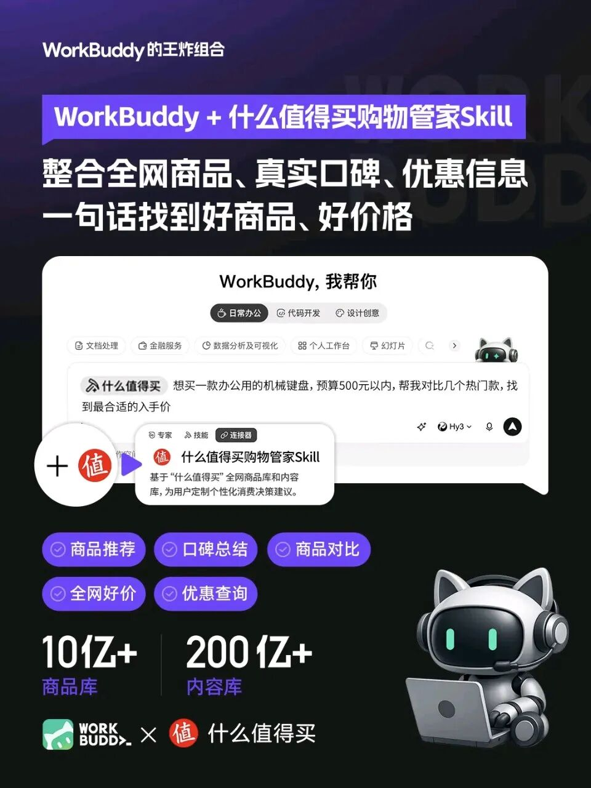
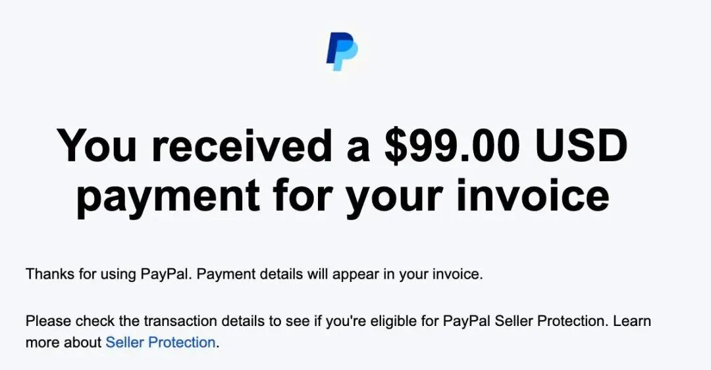

最近犯懒了，没有更新。
今天咱们不聊宏大的宏观经济，聊点实在的、甚至有点“野”的搞钱路子。说到海外华人在X平台（原推特）上赚钱，你可能想到的是那些双语流利、跟马斯克互动的大V。
但我最近发现了一条暗流，完全颠覆了我的认知。
你可能不信，现在一批在X上靠创作者分成月入五千甚至上万美元的中国人，可能连一篇原创英文长文都没写过。
他们做的事，简单说就是：把英文世界的爆款长文，用AI脚本拆成一条条带“钩子”的Thread（帖子串），发出去，赚广告分成，再挂上SaaS（软件即服务）产品的联盟链接，赚佣金。

这套玩法的核心，不是做“更好的内容”，而是做“更快的分发”。他们用一套基于Tweepy和GPT的脚本，每天凌晨自动抓取Hacker News、Product Hunt这些平台的爆款内容，喂给调教好的模型，自动生成一条“钩子推文+5到8条论证推文+挂联盟链接”的完整Thread。一个人管着四五个这样的账号，轻松过平台的创作者分成门槛。
更让人惊讶的是，这背后很多人是国内的95后，坐标郑州、成都、长沙，英文可能说得不太利索。他们把这套玩法跑成了一条流水线：养账号、调Prompt（指令）、换联盟链接，赚的是信息差和效率的钱。
那他们到底怎么赚钱？
这分两层。第一层是摆在明面上的 X创作者广告分成。只要帖子有流量，就有收入。但这不是大头。
真正的“暗账”在于SaaS联盟佣金。很多海外SaaS产品，比如建站工具Framer、邮件营销平台Beehiiv，联盟佣金高达20%-40%的持续性分成。这意味着，用户从你的链接点进去付费订阅，你每个月都能抽成，只要用户不流失。一条爆款Thread如果达到两百万展现，转化率千分之一，就是几百个付费用户，带来的被动收入相当可观。

这听起来有点像“搬运”，但我觉得，它更像一种 “新型的信息套利” 。很多人第一反应可能是质疑，觉得这不就是洗稿吗？有什么技术含量？
这恰恰是我觉得最有意思的地方。它的护城河不在于内容的“原创性”，而在于搭建了一套高效的分发管道。这套管道的壁垒在于：爆款内容的监测算法、Prompt工程的迭代、账号矩阵的养号经验，以及对X平台钩子句式的暴力测试。这每一件，都需要几百个小时的实操积累，不是简单复制就能搞定的。
这件事的启发是：赚快钱的方式确实变了。 以前可能是用勤奋换钱，现在是靠脑子换钱，接下来就是靠“Prompt”换钱。当你还在纠结要不要露脸做深度原创IP时，有人已经让GPT一天生成两百条能上热门的推文了。
当然，这种“流水线”模式能快速变现，但若想走得更远、建立真正的个人壁垒，“专业能力+分享精神+跨文化视角，这三者的组合，在这个时代能产生巨大的乘数效应”。许多在X上真正站稳脚跟的华人大V，靠的正是这种深度价值——用硬核的专业知识、无私的分享姿态和独特的桥梁视角，赢得长期信任与影响力。这条路径更慢，但复利更惊人。
两条路没有高下，只看你追求的是短期利润，还是长期品牌。希望今天的分享能给你带来一点新思路。